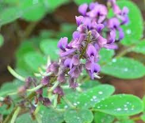
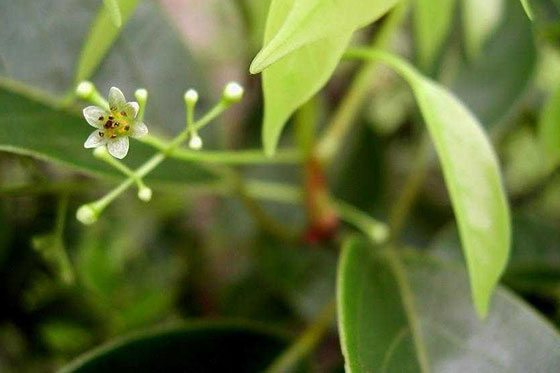
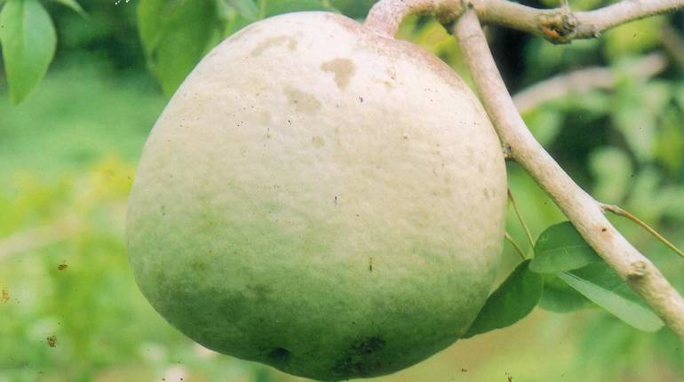
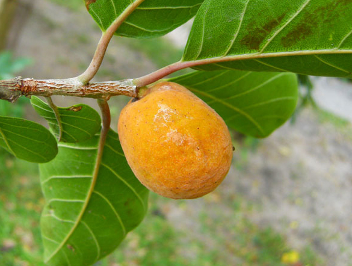
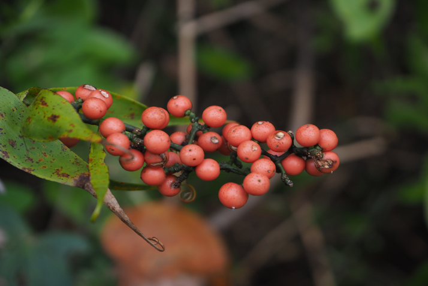
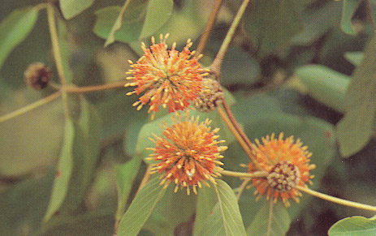
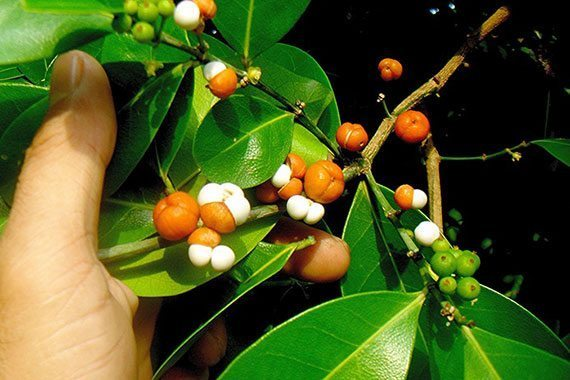
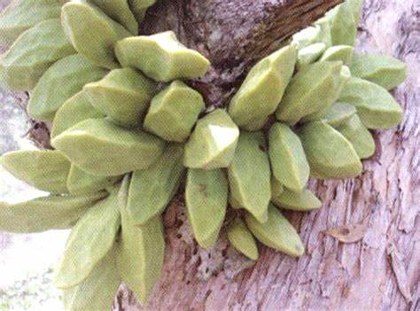
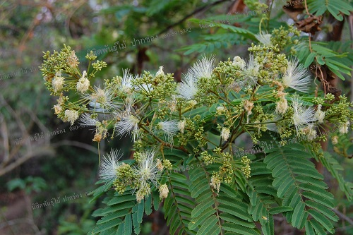
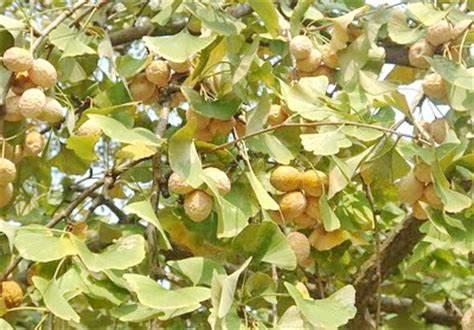

สมุนไพรไทย 22 ชนิดเสี่ยงสูญพันธุ์
1.ถั่วดินโคกหรือพิษนาศน์
ชื่อวิทยาศาสตร์: Sophora exigua Craib
ชื่อท้องถิ่น: ถั่วดินโคก (เลย), แผ่นดินเย็น (อุบลราชธานี), นมราชสีห์ พิษนาท (ฉะเชิงเทรา), นมฤาษี
สรรพคุณของต้นพิษนาศน์
- รากพิษนาศน์ สรรพคุณเป็นยาลดไข้ แก้พิษงู รักษาฝี เป็นยาบำรุงน้ำนมสำหรับสตรีหลังคลอดบุตร
- ใบหง้าพิษนาศน์ และใบพิษนาศน์ สรรพคุณรักษาแผลฝี
- ใบพิษนาศน์ สรรพคุณรักษาแผลฝี
- ผลพิษนาศน์ ลักษณะผลเป็นฝัก มีขนสีขาวปกคลุมอยู่ทั่วฝัก

2.เทพทาโร
ชื่อวิทยาศาสตร์: Cinnamomum porrectum (Roxb.) Kostern
ชื่อท้องถิ่น: ข่าต้น (ภาคกลาง), จะไคต้น, จะไคหอม (ภาคเหนือ), จวง, จวงหอม (ภาคใต้) ,มะแดกกะมางิง (มลายู), หวางจาง (จีน)
สรรพคุณของเทพทาโร
- เปลือกต้นไม้ มีน้ำมันระเหย 1-25 % และแทนนิน แก้ลมจุกเสียด แน่นเฟ้อ แก้ปวดท้อง ขับลมในลำไส้และกระเพาะอาหาร บำรุงธาตุ
- ใบ ใช้ปรุงเป็นยาหอมแก้ลม จุกเสียดแน่นเฟ้อ แก้อาการปวดท้อง ขับผายลมได้ดี ขับลมในลำไส้และกระเพาะอาหารให้เรอ เป็นยาบำรุงธาตุ ขับเสมหะ
- เมล็ด จะให้น้ำมัน ใช้เป็นยาทาถูนวด แก้ปวด

3.มะตูมนิ่ม
ชื่อวิทยาศาสตร์: Aegle marmelos
ชื่อท้องถิ่น: มะปิน (ภาคเหนือ), หมากตูม(ภาคอีสาน), ทันตาเถร (ภาคใต้)
สรรพคุณของมะตูมนิ่ม
- ผลสุกสามารถนำมาใช้เป็นยาระบายได้
- เปลือกรากและลำต้นจะช่วยแก้อาการไข้จับสั่น
- ใบสดนำมาคั้นเอาน้ำ ใช้แก้หวัด

4.มะหาด
ชื่อวิทยาศาสตร์: Monkey Jack, Monkey Fruit
ชื่อท้องถิ่น: ปวกหาด (เชียงใหม่), มะหาดใบใหญ่ (ตรัง), หาดขนุน (ภาคเหนือ), ฮัด (ภาคตะวันตกเฉียงเหนือ), หาด (ทั่วไป-ภาคกลาง), เซยาสู้ (กะเหรี่ยง-กำแพง), กาแย ตาแป ตาแปง (มลายู-นราธิวาส), ขนุนป่า
สรรพคุณของมะหาด
- แก่นมะหาดมีรสร้อน มีสรรพคุณเป็นยาแก้กระษัย ละลายเลือด กระจายโลหิต แก้ดวงจิตขุ่นมัว ระส่ำระสาย แก้อาการนอนไม่หลับ เป็นยาแก้ลม
- เปลือกต้นสดนำมาต้มกับน้ำกินเป็นยาแก้ไข้ หรือจะใช้รากสดหรือแห้ง นำมาต้มกับน้ำกินเป็นยาแก้ไข้ก็ได้ (เปลือกต้น,ราก) แก่นมีรสร้อน สรรพคุณเป็นยาแก้ไข้ต่าง ๆ
- รากมะหาดสดหรือแห้งนำมาต้มกับน้ำกินเป็นยาแก้พิษร้อนใน (ราก)

5.เร่ว
5.1 เร่วน้อย
ชื่อวิทยาศาสตร์: Amomum villosum Lour.
ชื่อท้องถิ่น: เร่ว, เร่วดง
5.2 ใหญ่
ชื่อวิทยาศาสตร์: Amomum xanthioides Wall. ex Baker
ชื่อท้องถิ่น: เร่ว, เร่วกระวาน, กระวานป่า, หมากแหน่ง, มะอี้, หมากอี้, หมากเน็ง
สรรพคุณของเร่ว
- ผลหรือเมล็ดจากผลที่แก่จัดใช้เป็นยาแก้ท้องขึ้น ท้องอืด ท้องเฟ้อ จุกเสียดแน่นท้อง แก้เสมหะในลำคอ
- ช่วยแก้อาการปวดท้อง ด้วยการใช้เมล็ดเร่วผสมกับหัวแห้วหมู ขิงแห้ง และชะเอมเทศ นำมาปรุงเป็นยารับประทาน
- ช่วยแก้เสมหะ

6.หัวร้อยรู
ชื่อวิทยาศาสตร์: Hydnophytum formicarum Jack
ชื่อท้องถิ่น: ปุ่มฟ้า, ปมเป้า, ปุ่มเป้า, ปุมเป้า หัวร้อยรู (ตราด), กระเช้าผีมด (สุราษฎร์ธานี), ร้อยรู (ปัตตานี), กาฝากหัวเสือ (นราธิวาส), ดาลูบูตาลิมา, ดาลูปูตาลิมา (มลายู-ภาคใต้), หัวร้อยรู (ภาคกลาง), ป่าช้าผีมด (ภาคตะวันออกเฉียงเหนือ)
สรรพคุณของหัวร้อยรู
- ว่านหัวร้อยรูช่วยบำรุงหัวใจ ช่วยขับชีพจร
- ใช้เป็นยารักษาเบาหวาน
- หัวช่วยแก้อาการปวดเข่า แก้ข้อเข่า แก้ข้อเท้าปวดบวม ใช้เป็นยาแก้พิษในข้อกระดูกหรือโรคกระดูกที่มีอาการเจ็บปวด กระดูกเปราะ ผิวหนังเป็นจ้ำ

7.กระทุ่มนา
ชื่อวิทยาศาสตร์: Mitragyna diversifolia (Wall ex G.Don) Havil.
ชื่อท้องถิ่น: ถ่มพาย (เลย), โทมน้อย (เพชรบูรณ์), กระทุ่มดง (กาญจนบุรี), กาตูม (เขมร-จันทบุรี), ตำ (ส่วย-สุรินทร์), ท่อมนา (สุราษฎร์ธานี), ท่อมขี้หมู (สงขลา), กระท่อมขี้หมู ตุ้มแซะ ตุ้มน้อย ตุ้มน้ำ (ภาคเหนือ), กระทุ่มน้ำ (ภาคกลาง), กระทุ่มหมู, กว้าวตุ้ม, ตู้ม, แซะ
สรรพคุณของกระทุ่มนา
- ใบมีรสขมเฝื่อนเมา มีสรรพคุณช่วยลดความดันโลหิตและออกฤทธิ์กดต่อประสาทและกล้ามเนื้อ
- เป็นยาแก้ท้องร่วง ปวดมวนท้อง ซึ่งมีฤทธิ์เหมือนใบกระท่อม แต่อ่อนกว่า
- เปลือกต้นและใบใช้เป็นยาแก้บิดมูกเลือด

8.ขันทองพยาบาท
ชื่อวิทยาศาสตร์: Suregada multiflora (A.Juss.) Baill.
ชื่อท้องถิ่น: ยางปลวก ยางปลอก ยายปลวก ฮ่อสะพานควาย (แพร่, น่าน), ทุเรียนป่า ไฟ (ลำปาง), ขุนตาก ข้าวตาก (กาญจนบุรี), ขันทองพยาบาทเครือ ขัณฑสกร ช้องลำพัน สลอดน้ำ (จันทบุรี), มะดูกดง (ปราจีนบุรี), ขันทอง (พิษณุโลก), ดีหมี (พิษณุโลก, อุตรดิตถ์), ขันทองพยาบาท ดูดหิน (สระบุรี), ดูกใส ดูกไทร ดูกไม้ เหมือนโลด (เลย), ดูกไหล (นครราชสีมา), ขนุนดง ขุนดง (หล่มสัก-เพชรบูรณ์), ข้าวตาก ขุนทอง คุณทอง (ประจวบคีรีขันธ์), ขอบนางนั่ง (ตรัง), มะดูกเหลื่อม (ภาคเหนือ), มะดูกเลื่อม (ภาคตะวันตกเฉียงเหนือ), ขันทองพยาบาท มะดูก หมากดูก (ภาคกลาง), กะดูก กระดูก (ภาคใต้), หมากดูด (ไทย), เจิง โจ่ง (ส่วย-สุรินทร์), มะดูกเลี่ยม, เหมือดโรค, ป่าช้าหมอง, ยายปลูก
สรรพคุณของขันทองพยาบาท
- ใช้เป็นยาบำรุงเหงือก ใช้รักษาเหงือกอักเสบ ทำให้ฟันทน เหงือกแข็งแรง
- ช่วยรักษาโรคตับพิการ
- ช่วยฆ่าพยาธิผิวหนัง
- ช่วยถ่ายน้ำเหลืองเสีย
- ช่วยรักษาน้ำเหลืองเสีย

9.จุกโรหินี
ชื่อวิทยาศาสตร์: Dischidia major (Vahl) Merr.
ชื่อท้องถิ่น: ข้าวฟ่าง (คนเมือง), บวบลม (นครราชสีมา, อุบลราชธานี), พุงปลา (จันทบุรี, ตราด), กล้วยมุสัง (พังงา), จุรูหินี (ชุมพร), กล้วยไม้ (ภาคเหนือ), โกฐพุงปลา จุกโรหินี พุงปลาช่อน (ภาคกลาง), เถาพุงปลา (ระยอง, ภาคตะวันออก), โกฎฐ์พุงปลา (ไทย), นมตำไร (เขมร)
สรรพคุณของจุกโรหินี
- ผลนำมาต้มกับน้ำดื่ม จะช่วยลดระดับน้ำตาลในเลือดได้
- ช่วยแก้หอบหืด
- เช่วยแก้เสมหะผิดปกติ เสมหะพิการ
- ช่วยแก้บิด แก้ปวดเบ่ง มูกเลือด

10.ชะเอมไทย
ชื่อวิทยาศาสตร์: Albizia myriophylla Benth.
ชื่อท้องถิ่น: ตาลอ้อย (ตราด), อ้อยสามสวน (อุบลราชธานี), ย่านงาย เซเบี๊ยดกาชา (ตรัง), อ้อยช้าง (สงขลา, นราธิวาส), ชะเอมป่า (ภาคกลาง), ส้มป่อยหวาน (ภาคเหนือ), เพาะซูโฟ (กะเหรี่ยงแม่ฮ่องสอน), กอกกั๋น
สรรพคุณของชะเอมไทย
- ช่วยบำรุงกล้ามเนื้อให้เจริญ
- ช่วยแก้โรคตา
- ใบมีรสร้อนและเฝื่อน ช่วยขับโลหิตระดูของสตรี
- ช่วยบรรเทาอาการเจ็บคอ
- ช่วยแก้กำเดาให้เป็นปกติ

7.กระวาน
กระวาน ชื่อวิทยาศาสตร์ Amomum verum Blackw กระวานจัดเป็นเครื่องเทศที่มีราคาแพง ที่ซื้อขายในประเทศไทยมีอยู่ด้วยกัน 2 ชนิด คือ
- กระวานไทย หรือ กระวาน (Amomum krevanh) ผลจะมีลักษณะค่อนข้างกลม ปลูกมากในทวีปเอเชียตะวันออกเฉียงใต้ ได้แก่ ประเทศอินโดนีเซีย หมู่เกาะอินเดียตะวันตก สำหรับประเทศไทยแหล่งผลิตสำคัญจะเก็บได้จากตามป่าบริเวณเขาสอยดาว ในจังหวัดจันทบุรี
- กระวานเทศ หรือ กระวานแท้ (Elettaria cardamomum) ผลมีลักษณะแบนรี ซึ่งแตกต่างจากกระวานไทย กระวานเทศนี้จะปลูกมากในประเทศอินเดีย ศรีลังกา
กระวานมีลักษณะส่วนต่างๆ ดังนี้
- ต้นกระวาน จัดเป็นไม้ล้มลุกมีเหง้า มีความสูงประมาณ 2 เมตร โดยมีกาบใบหุ้มซ้อนกันทำให้ดูคล้ายลำต้น โดยต้นกระวานมักขึ้นในที่ร่มหรือใต้ร่มไม้ที่มีความชื้นสูง หรือในที่ที่มีฝนตกชุกและอยู่สูงจากระดับน้ำทะเลอย่างน้อย 800 ฟุตขึ้นไป โดยมักจะพบขึ้นทั่วไปตามไหล่เขาในบริเวณป่าดงดิบ
- ใบกระวาน ใบเป็นใบเดี่ยว ลักษณะของใบแคบและยาว เป็นรูปขอบขนาน มีความยาวประมาณ 15-25 เซนติเมตร ปลายใบแหลม
- ผลมีเปลือกแข็งเรียบและมีเส้นผ่านศูนย์กลาง 5-15 เซนติเมตร บางผลมีเปลือกแข็งมากจนต้องกระเทาะเปลือกออกโดยใช้ค้อนทุบ เนื้อผลเหนียวข้น มีกลิ่นหอม และมีเมล็ดจำนวนมากแทรกอยู่ในเนื้อผล โดยเมล็ดจะมีขนหนาปกคลุม
- ผลกระวาน หรือ ลูกกระวาน ผลมีลักษณะค่อนข้างกลม ติดเป็นพวงราว 10-20 ผล ผลมีสีขาวนวล เปลือกผิวเกลี้ยง มองเห็นเป็นพู มี 3 พู ผลอ่อนมีขน ผิวเปลือกมีริ้วตามยาว เรียงตัวจากฐานไปสู่ยอด ผลมีขนาดเส้นผ่านศูนย์กลางประมาณ 10 มิลลิเมตรและยาวประมาณ 6-15 มิลลิเมตร ทั้งหัวและท้ายผลมีจุก ผลจะร่วงไปเมื่อแก่ ผลแก่จะแตก มีเมล็ดอยู่ภายในจำนวนมาก แบ่งเป็น 3 กลุ่ม มีเมล็ดกลุ่มละประมาณ 12-18 เมล็ด
- เมล็ดกระวาน เมล็ดอ่อนมีสีขาวและมีเยื่อหุ้ม เมื่อแก่แล้วจะเปลี่ยนเป็นสีดำหรือสีน้ำตาลไหม้ โดยทั้งผลและเมล็ดจะมีกลิ่นหอมเฉพาะตัว คล้ายกับกลิ่นของการบูร มีรสเผ็ดและเย็น
สรรพคุณของกระวาน มีดังนี้
- ช่วยบำรุงธาตุในร่างกาย
- ช่วยแก้ธาตุพิการ
- ช่วยทำให้เจริญอาหาร
- ช่วยแก้เสมหะให้ปิดธาตุ
- ช่วยบำรุงโลหิตในร่างกาย

แหล่งที่มา: medthai.com